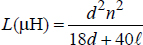
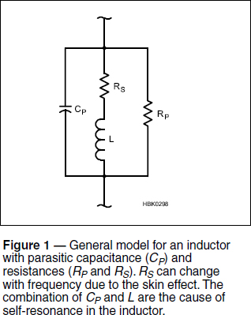
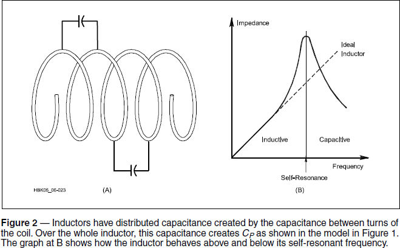
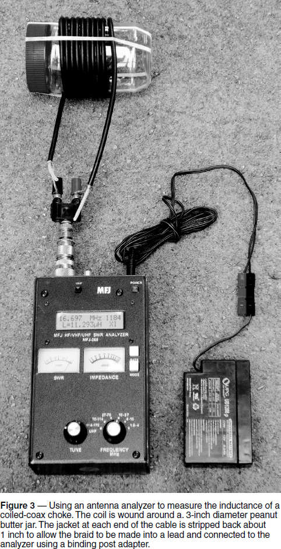

Experiment #142 — Inductors at RF
In one of the many strange-but-true things that happen at RF, that innocent-looking coil of wire or cable has more than one personality as the frequency changes! This month we’ll explore the wacky world of inductors and learn how to use a neglected function of a common antenna analyzer along the way.
Inductor Basics
This formula for the inductance L of a basic single-layer, air-wound inductor has been in articles and handbooks for generations1, 2:

Where d is the diameter of the coil in inches from wire center to wire center, ℓ is the coil’s length in inches, and n is the number of turns. This approximation works reasonably well but there are innumerable corrections.3 The formula makes several assumptions that the coil: is made from wire that is not too thick; is not too long or too short; has leads not too long; and has a reasonable pitch (the number of turns per unit of length).
Why does frequency matter? The inductor model in Figure 1 gives part of the answer. This parallel-series circuit represents what an RF signal encounters in an inductor. Instead of just inductance (L in the schematic), there are three other parasitic characteristics shown; CP, RP, and RS resulting from the physical construction of the inductor. L is the inductance independent of parasitic effects.

RP is the simplest of the three parasitics, representing leakage resistance, resistive current paths “around” the inductor for current. Dirt or grease on a circuit board and dust buildup on the turns of the inductor or the body of an encapsulated inductor are the most common sources of leakage resistance. It becomes significant when there is a high voltage across the inductor, such as might exist in a transmitter or tuning unit. This is a good reason to vacuum out high-power circuits from time to time.
RS has a larger effect on the inductor’s performance than RP, especially at high frequencies. At dc, RS is specified as DCR, or dc resistance. The resulting voltage drop or resistive heating can be important when the inductor has to carry dc current, such as when an RF choke is used in a bias T or a plate blocking choke.
If the inductor is used at RF, skin effect comes into play, restricting current flow to a layer near the surface of the conductor.4 This causes RS to increase with frequency. Inductors used in transmitters and tuning units often carry significant current so it is important to consider skin effect when selecting the size of a coil’s wire or tubing. Resistive losses lower the inductor’s Q, its ratio of reactance to resistance: XL / RS.
CP has the largest effect on inductor performance at RF. By creating a parallel-LC circuit, the combination of CP and L means the inductor will resonate without any other external components. This creates the inductor’s self-resonant frequency or SRF. We observed the effects of self-resonance in Experiment #111 on coiled-coax chokes.5 The coiled-coax choke makes use of the parallel resonance’s high impedance to block current flow on the outside of the coax shield over a range of frequencies.
Where does CP come from? Figure 2 shows that CP results from inter-turn capacitance. Each spot on the inductor wire forms a small capacitance to every other spot on adjacent turns, even though they are connected together by the wire. Over the entire inductor, CP is called distributed capacitance. Ways to reduce CP include stretching the coil so that the turns are farther apart or in the case of multi-layer coils, carefully arranging the winding layers and winding the coil in sections.

Measuring Inductance
If you have access to an antenna analyzer that displays reactance, you can measure an inductor’s SRF and see the effects for yourself. As in Experiment #111, we’ll use the popular MFJ-259/269-series of antenna analyzers.
Start by obtaining 8 to 10 feet of coaxial cable. Any of the RG-8/213/58/59 family will do — the characteristic impedance of the cable is unimportant as we are only interested in what happens on the outside of the shield. Wind the cable around a non-conducting form such as the peanut butter jar in Figure 3. Remove a short section of jacket from each end, twist the shield into a lead, and connect it to the analyzer.

My coil of RG-58 cable has 91⁄2 turns, it is 3 inches (76 mm) in diameter, and is 2 inches (51 mm) long. According to the equation at the start of this article, its inductance should be 6 μH. However, the equation isn’t intended to apply to a close-wound coax coil, so I turned to the online inductance calculator by ON4AA at hamwaves.com/antennas/inductance.html. This calculator takes the diameter of my “wire” (4.5 mm) into account, as well, producing an inductance of 5.6 μH at a frequency of 1 MHz.
Connect the coil to your antenna analyzer, using a binding post adapter as shown in Figure 3. (Keep the analyzer and coil away from metal surfaces.) The following instructions apply to the MFJ-259/269 analyzer. Turn on the analyzer and press the MODE button until the display shows Inductance in uH. Clockwise from the upper left, the display shows frequency, reactance value, the label XL, and inductance in μH. The manual explains that the calculation is based on reactance and the analyzer itself can’t tell whether the reactance is inductive or capacitive. You have to figure that out — if increasing the frequency causes reactance to increase, the reactance is inductive.
Start with your analyzer at its lowest frequency. (1.7 MHz on my analyzer.) The inductance value of my coil was 6.6 μH. This is not too far from the calculated value which didn’t account for the jacket plas-tic’s effect on CP or the extra lead length from the coil to the analyzer. Slowly increase frequency. My inductance value stayed fairly steady near the calculated value until I passed 3 MHz and then began increasing. Why? As Figure 3B shows, the impedance of the resonant circuit of the inductor increases faster than that of an ideal inductor, causing the analyzer to see a “bigger” inductance.
Press MODE until you are back in the analyzer’s usual “Impedance R&X” mode. Keep increasing frequency while watching the X value. (Ignore the SWR and Resistance meters.) You’ll see it increase faster and faster until it exceeds the meter’s ability to measure reactance and it displays Xs = 0. Keep increasing frequency and watch the Rs display, the equivalent series resistance value of the impedance. It will continue to increase, exceeding the analyzer’s range of 1500 Ω as it approaches the coil’s SRF.
Continue to increase frequency and after you pass the SRF, impedance will eventually come back into range and keep dropping as frequency increases, just like in Figure 3B. Switch back to inductance measurement and repeat the sweep through the coil’s SRF. Note that above the SRF, reactance drops as frequency increases, showing that the reactance is capacitive. The inductor has changed into a capacitor!
Connect a 1.5 kΩ resistor (carbon composition or film will do) across the analyzer terminals to keep the impedance within the analyzer’s range and switch back to impedance mode. You can find the coil’s SRF by adjusting frequency to find the maximum value of Rs. My coil’s SRF was 13.6 MHz where the meter displayed 1488 Ω. This would be a good choke for a 20 meter antenna! Now try spreading the turns apart, reducing CP, to see how that affects the SRF. You can also try an equivalently sized inductor out of insulated wire. A simple inductor? Not really!
What would happen if I tried to use this coil at VHF? CP would make the inductor unusable. In fact, even small coils can become unusable at and above VHF due to parasitic capacitance. Capacitors with significant amounts of parasitic inductance can become unusable at those frequencies for similar reasons. Knowing the actual characteristics of your components is important for successful RF design and construction.
Notes
1H. A. Wheeler, “Simple Inductance Formulas for Radio Coils,” Proc. I.R.E., Vol. 16, p 1398, Oct 1928.
2F. E. Terman, Radio Engineers’ Handbook, McGraw-Hill, p. 55, 1943.
3F. W. Grover, Inductance Calculations, Dover Publications, 2009.
4The ARRL Handbook, 91st edition, ARRL, Sections 5.3.4 through 5.3.7.
5All previous Hands-On Radio experiments are available to ARRL members at www.arrl.org/hands-on-radio.